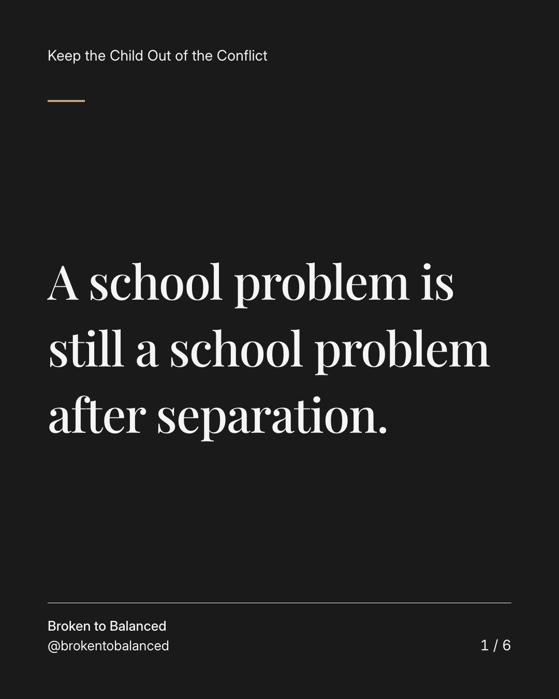
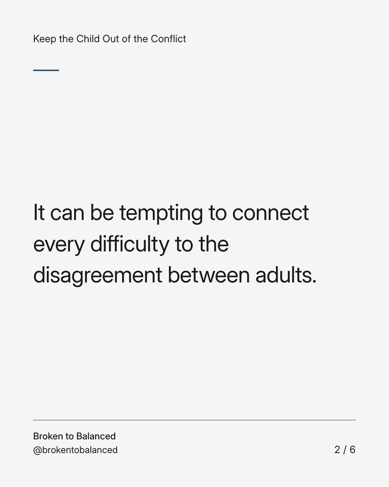
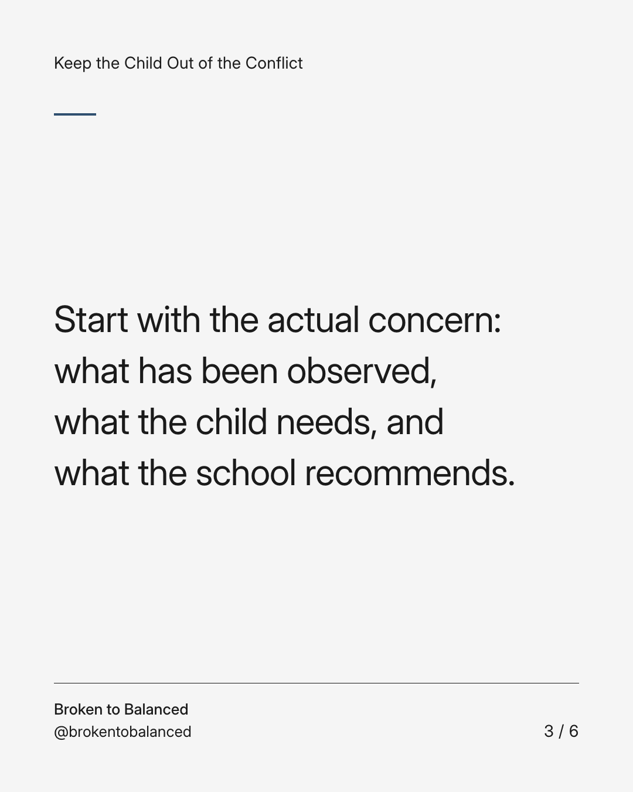
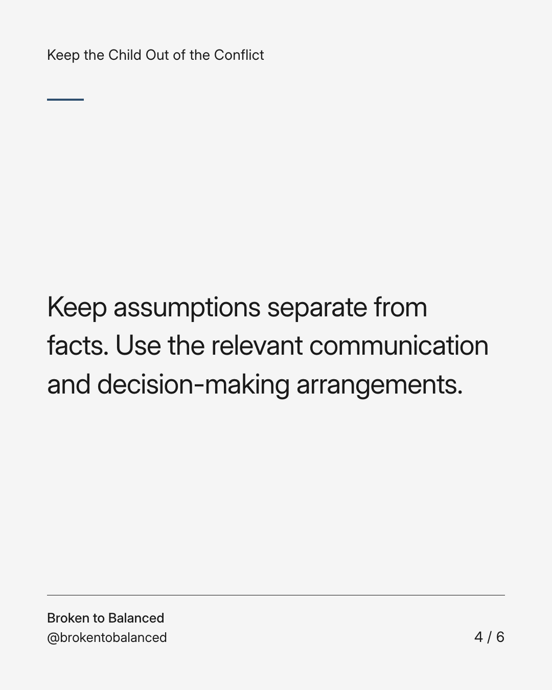
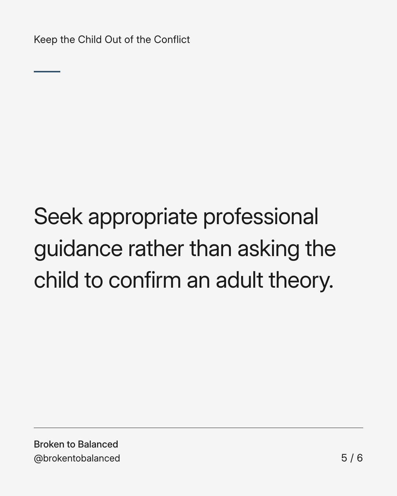
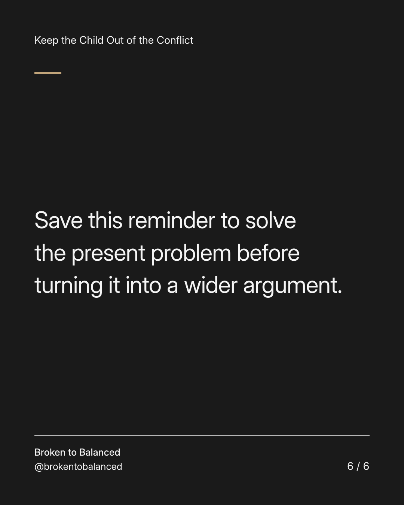

Exact text and accessibility text
A school problem is still a school problem after separation.
Slide 1 of 6. A school problem is still a school problem after separation.


Exact text and accessibility text
It can be tempting to connect every difficulty to the disagreement between adults.
Slide 2 of 6. It can be tempting to connect every difficulty to the disagreement between adults.


Exact text and accessibility text
Start with the actual concern: what has been observed, what the child needs, and what the school recommends.
Slide 3 of 6. Start with the actual concern: what has been observed, what the child needs, and what the school recommends.


Exact text and accessibility text
Keep assumptions separate from facts. Use the relevant communication and decision-making arrangements.
Slide 4 of 6. Keep assumptions separate from facts. Use the relevant communication and decision-making arrangements.


Exact text and accessibility text
Seek appropriate professional guidance rather than asking the child to confirm an adult theory.
Slide 5 of 6. Seek appropriate professional guidance rather than asking the child to confirm an adult theory.


Exact text and accessibility text
Save this reminder to solve the present problem before turning it into a wider argument.
Slide 6 of 6. Save this reminder to solve the present problem before turning it into a wider argument.
Exact caption
Plain-text fallback: select and copy the caption.